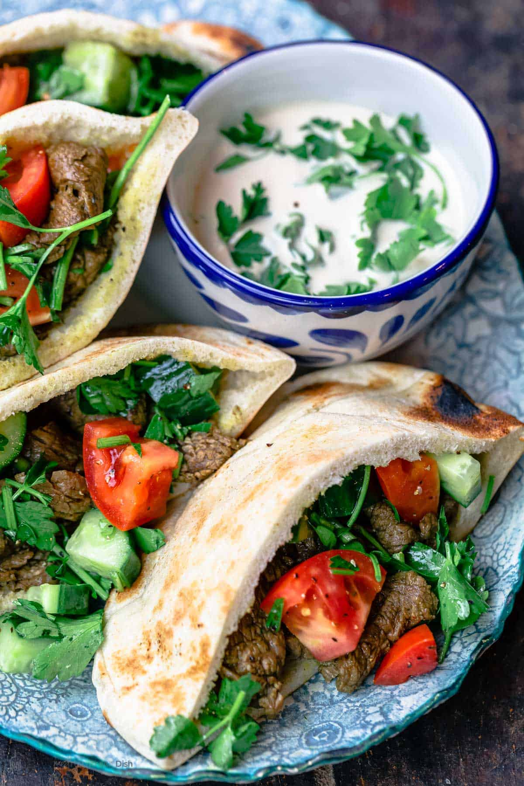

Beef Shawarma

Easy beef shawarma with homemade shawarma seasoning, served in pita pockets with tomato-cucumber salad and a drizzle of tahini sauce.
1 tspground cumin1 tspground coriander1 tspsweet Spanish paprika¾ tspground turmeric½ tspground cloves½ tspcayenne pepper½ tspground cinnamon¼ cupextra virgin olive oil¼ cupwhite wine vinegar1lemon, zest and juice1½ lbsbeef flap steak or flank steak, cut very thinly against the grain into bite-size pieces- kosher salt and black pepper
4garlic cloves, minced1medium yellow onion, halved and sliced4pita bread loaves, halved (8 pita pockets)- Mediterranean salad (or sliced tomatoes and cucumbers, and chopped parsley)
- tahini sauce
- pickled cucumbers (optional)
In the bottom of a large mixing bowl, add the shawarma spices. Add the olive oil, vinegar, and the zest and juice of one lemon. Using a spoon, mix to combine.
Using a chef’s knife, cut the flap steak against the grain into thin bite-size slices (no more than ¼-inch thick).
Add the sliced meat to the bowl. Season with kosher salt and black pepper. Add the garlic and onions. Using tongs, toss very well to make sure the meat is well-coated with the marinade. Set aside to marinate at room temperature for a few minutes (or, if you have time, cover and refrigerate for a couple of hours).
Heat a large cast iron grill pan or skillet over high heat. Using tongs, add the meat pieces, spreading them out as much as you can. Cook over high heat for anywhere between 8 and 15 minutes, until the meat is fully cooked. (For less liquid in the pan and extra char, cook closer to 15 minutes. If your pan isn’t large enough, cook the meat in batches.)
While the meat cooks, prepare the pita pockets and fixings: make a Mediterranean salad with tomatoes, cucumbers, and parsley, make the tahini sauce, and prepare your pickled cucumbers, if using.
Assemble the shawarma sandwiches. Open up the pita pockets and load them with the beef shawarma and salad, then finish with a generous drizzle of tahini sauce. Serve immediately!